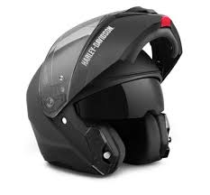
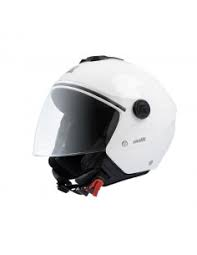
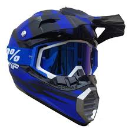
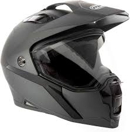

Guía básica para elegir el casco adecuado
Cascos Principales
- Casco integral: ofrece la mayor protección, cubre completamente cabeza y rostro.
- Casco modular (abatible): combina características del integral y el abierto; permite levantar la mentonera.
- Casco abierto (tipo jet): cubre la cabeza pero deja el rostro expuesto; recomendado para uso urbano.
- Casco tipo off-road: diseñado para motocross o enduro, ligero y con mentonera prominente.
- Casco dual sport: mezcla características del integral y off-road; ideal para uso mixto.
- Casco medio (half helmet): ofrece mínima protección; no recomendado para alta velocidad.






Recomendaciones al Elegir un Casco
- Verificar certificaciones como DOT, ECE o Snell.
- Asegurar un ajuste firme y cómodo sin puntos de presión.
- Escoger materiales resistentes y visor anti-rayas o antiempañante.
- Reemplazar el casco en caso de golpes fuertes o cada 5 años.